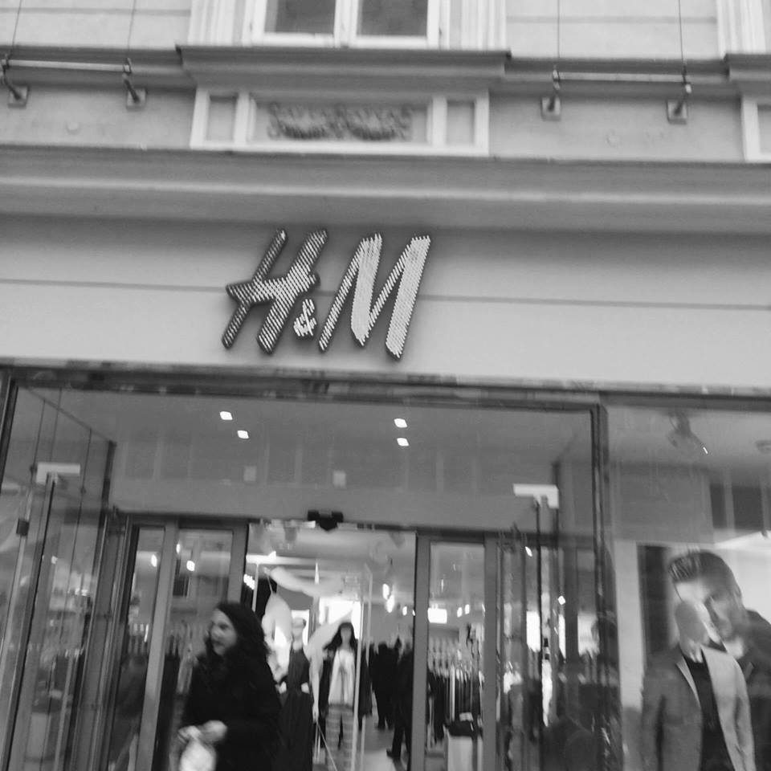

Moda ima na postfeminizem nasproten učinek, saj se postfeministke zavzemajo za svobodo izbiranja, moda pa je kontrolirana, obstajajo modne smernice in zapovedi in glede na te se ljudje oblačijo, saj bi bili radi videti dobro, primerno in urejeno. Odločitve o tem, kaj bomo oblekli torej niso zgolj le naše, ampak so vpliv širšega družbenega okolja. Z zunanjim videzom poleg mode povežemo tudi telo, ki danes ni več objet želje ampak tudi objekt preoblikovanja. Za razliko od feminizma se ženstvenost v postfeminizmu navezuje na telesno lastnino, ne pa na družbeno in psihološko. Postfeminizem v popularni kulturi zanima privlačno telo. Ta predstavlja vir ženske moči, nadzora in discipline.
